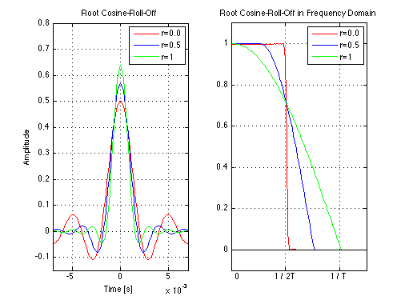

Root Raised-Cosine FIR filter
Copyright 2007 Telecommunications Lab
Fs = 10000; % Sampling frequency 50000 Hz T = 2/1000; % Symbol time interval [s]. t = -40*T:1/Fs:40*T; % Time vector (sampling intervals) t = t+0.00000001; % Otherwise, the denominator would be zero at t=0 f = 0:1/Fs:2; r = 0; % Roll-off factor % Root Raised-Cosine FIR filter for k=1:3 p(k,:) = 11.2*T*((4*r*cos(pi*t/T*(1+r))+(T./t).*sin(pi*(t/T)*(1-r))))./((1-(4*r*(t/T)).^2)*pi*sqrt(T)); %normed on the viewed region r=r+0.5; end % Plotting subplot(1,2,1);plot(t,p(1,:),'r',t,p(2,:),'b',t,p(3,:),'g','LineWidth',1.5);axis([-7*10^(-3) 7*10^(-3) -.15 .8]);hold on;grid on;xlabel('Time [s]');ylabel('Amplitude'); legend('r=0.0','r=0.5','r=1');title('Root Cosine-Roll-Off'); % Cosine-Roll-Off frequency response for i=1:3 P(i,:)=abs(fft(p(i,:).*(hamming(length(p(i,:))))')); end % Plotting subplot(1,2,2);plot(P(1,:)/max(P(1,:)),'r','LineWidth',1.5);hold on;plot(P(2,:)/max(P(2,:)),'b','LineWidth',1.5);hold on;plot(P(3,:)/max(P(3,:)),'g','LineWidth',1.5); legend('r=0.0','r=0.5','r=1');title('Root Cosine-Roll-Off in Frequency Domain'); hold on; axis([0 100 -.1 1.1]); set(gca,'XTick',[0:40:100]); set(gca,'XTickLabel',[' 0';'1 / 2T';'1 / T ';' ';' ';' ';' ']) f(1:length(P(1,:)))=0; line(1:length(f),f,'color','k'); grid on; hold off;